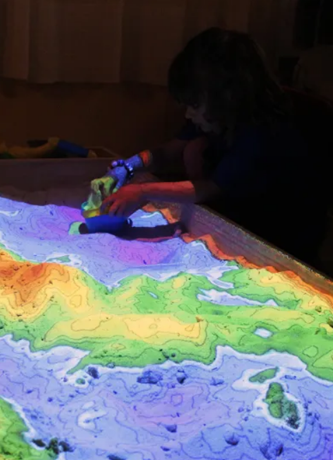
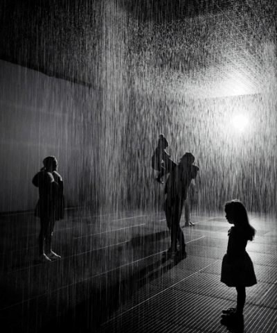
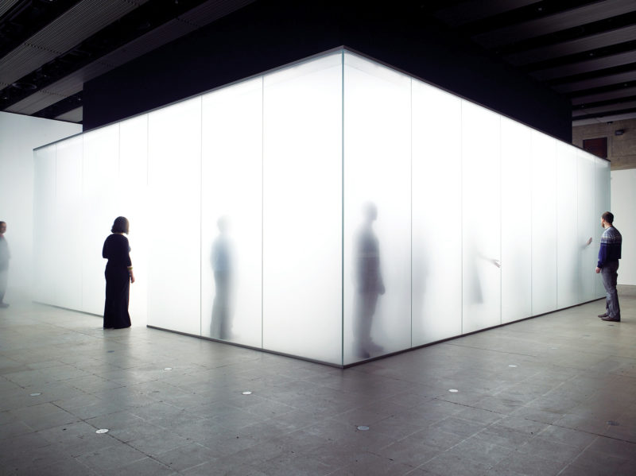
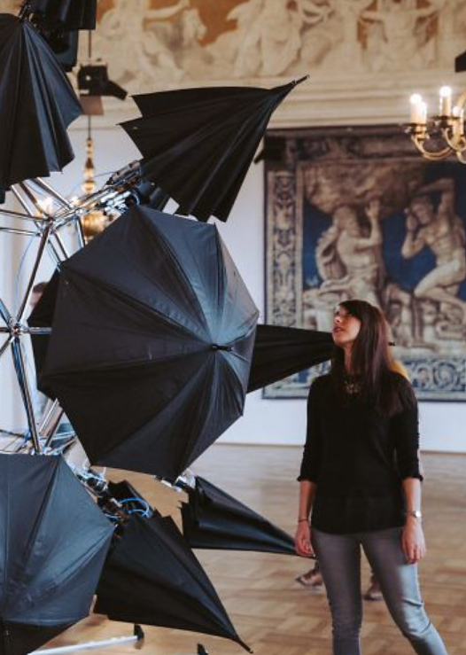
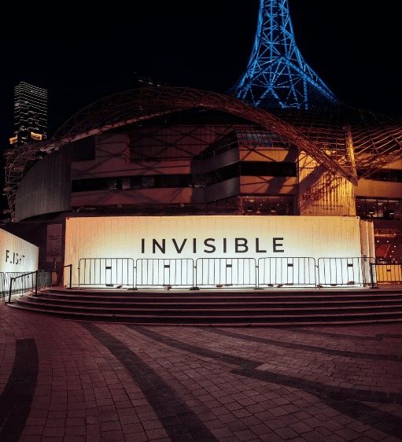
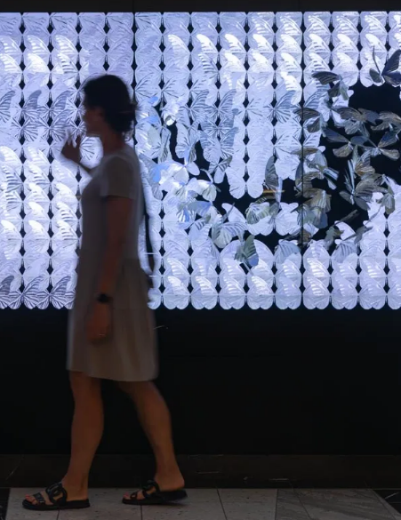
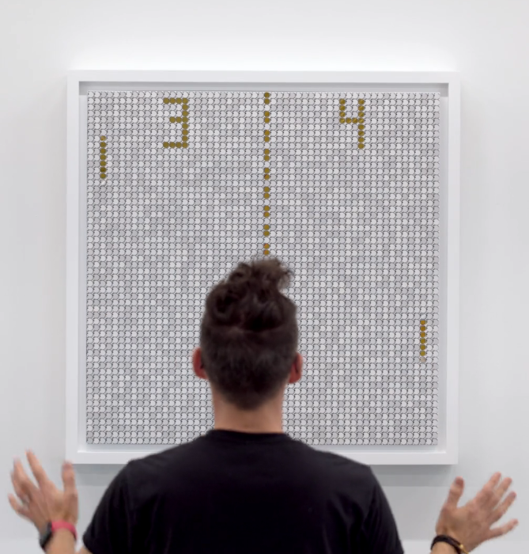

AR Sandbox by University of California in Davis. 2023
The AR Sandbox was an NSF-funded project that aimed to teach basic earth science concepts through the application of 3D visualisations on a real sandbox. The project utilised a closed loop of a Microsoft Kinect 3D camera, powerful simulation + visualisation software and a data projector. The resulting AR Sandbox hence allowed users to create topography models by shaping the sand, which was then augmented in real time through the elevation colour map, topographic contour lines and simulated water.

Rain Room. By Random International. 2023
The Rain room is a monumental interactive work that merges art, technology, and nature. It creates a theoretical space where participants who visit this experience are invited to respond and question their relationship with the installation, and on a deeper level, their relationship with nature and the environment.
I was particularly intrigued by this work as I have always been someone who loved the rain.

Blind Light by Antony Gormley. 2007
In Blind Light, Gormley creates a thick and dense environment that produces a disorienting background. The white environment is created using artificial god and engulfs an entire glass exhibition area. Upon entering the exhibit, participants become immersed in fog, forcing them to embrace a primitive experience created by the inundated air within the room. The audience's sense are further challenged due to the limited visibility of less than 2 feet caused by the mist. The entire exhibit forces visitors to think about perception and they could utilise their bodies as tools of navigation.

SURFACE X by Rebecca Gischel. 2018
For Surface X, Gischel wanted to explore the moment when our digital identity and real identities collide. 'the moment we meet a person we got to know on some online platform for the first time physically, where the perfectly image of a person clashes with a real human'. To convey this message, Gischel utilises 35 umbrellas to create an interactive art installation. First, all umbrellas are opened and create this large sphere, flawless and impressive until someone comes closer and the perfect image becomes impossible to keep intact and thus the umbrella shy away and close, revealing our true selves.

DARKFIELD. Glen Neath, David Rosenberg. 2016.
Darkfield is a series of immersive 20-minute theatrical experiences staged within shipping containers in total darkness. With the use of 360 degree binaural audio and sensory effects paired with intense narratives, DARKFIELD challenges perception and create disorienting experiences ranging from plane crashes to entering dream-like states.

Every Wing has a Silver Lining by Dominic Harris. 2023
Every Wing has a Silver Lining stretches 16 meters in length and incorporates themes of freedom and endless possibilities, connecting the allure of maritime adventure with the butterfly's universal symbolism of transformation. The interactive installation furthermore presents itself as a shimmering tapestry that mirrors the oceans rhythmic movement. The work features 2,128 that initially appear in an abstract, parametric design. When a viewer then physically interacts with the piece, the touch acts like a disturbance on water, releasing the butterflies from their patterns into free flight.

Billion Dollar Arcade Series by BREAKFAST. 2024
As a reflection on the convergence of art, technology and cultural evolution, this series transforms iconic games into immersive experience that comment on the video game industry's staggering growth. By tracking your movements, the artwork allows you to control elements like paddles and shooters by shifting your body, forging an interactive connection between you and the piece.